ハイキュークラブ
２回生メンバー紹介
(2020年4月1日現在)
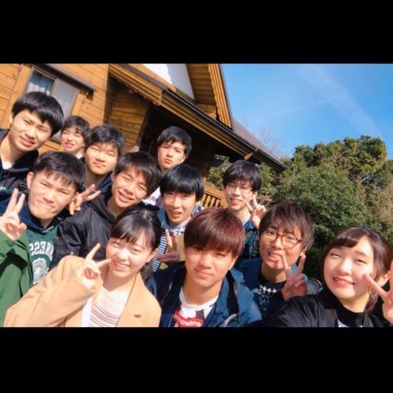
髙光 宜美
たかみつ のぶよし
学部
工学部 機械工学科
出身
大阪府
呼び名
のぶ
特徴
夜だと見えなくなる黒さ。
運転が好きすぎて、
みんなの足になってる。
普段の練習には来ないが、
イベントにはしっかりくる。
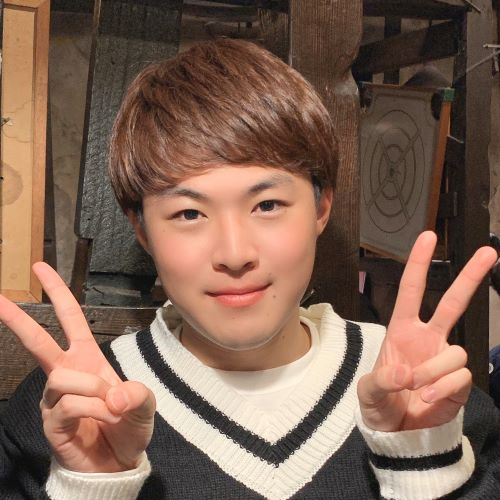
あずま なおき
東 尚希
工学部
電子・物理工学科
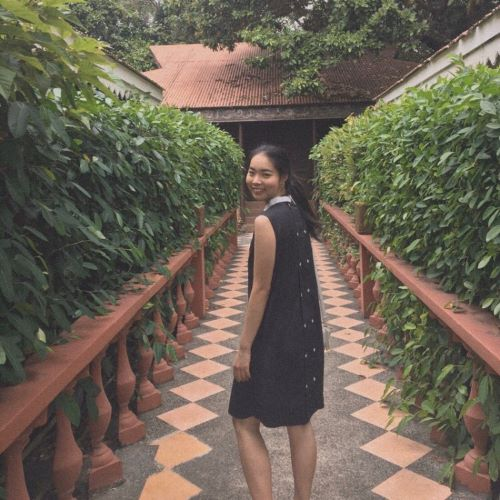
あべ きょうか
阿部 向夏
理学部
地球学科
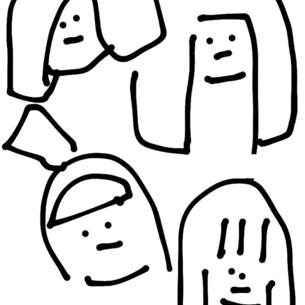
いしもと みずき
石本 端貴
理学部
地球学科
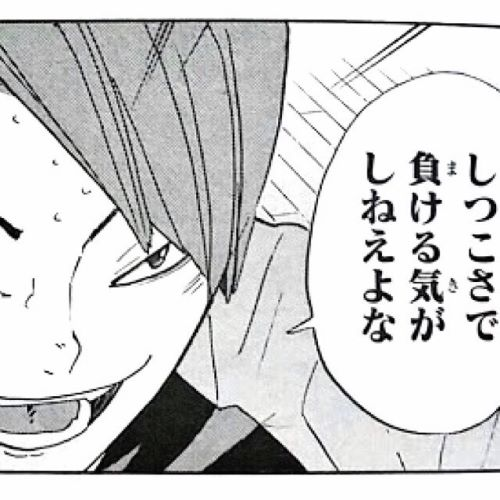
うえだ たくみ
植田 匠海
商学部
商学科
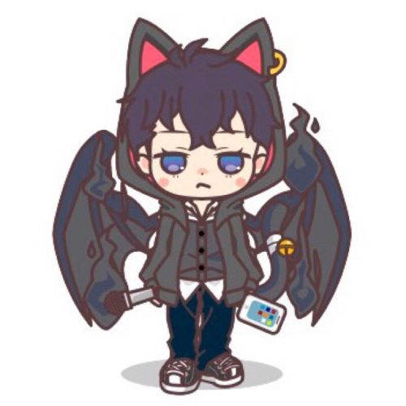
おかざき こうた
岡崎 光汰
理学部
化学学科
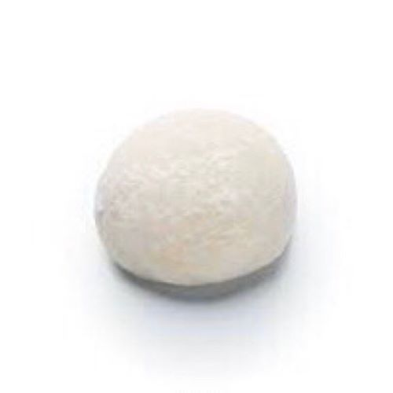
おの そうた
小野 颯太
工学部
化学バイオ学科
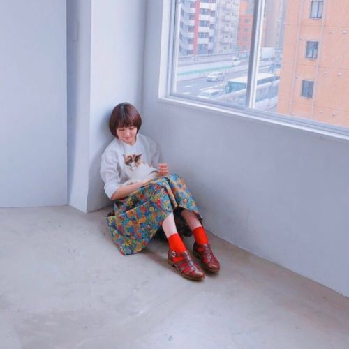
たかはし あゆみ
高橋 明弓
生活科学学部
居住環境学科
どうまえ りく
堂前 陸
文学部
文学科
ながえ てつや
長江 哲也
商学部
商学科
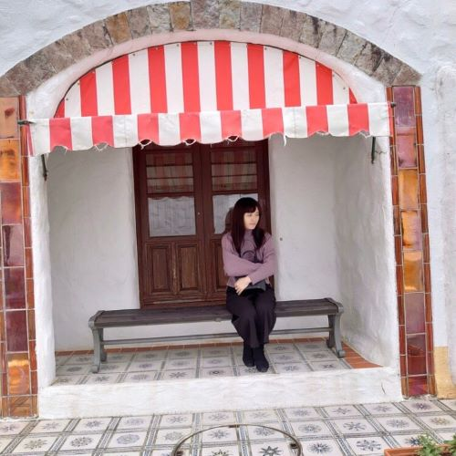
のろ ほのか
野呂 帆乃佳
理学部
化学学科
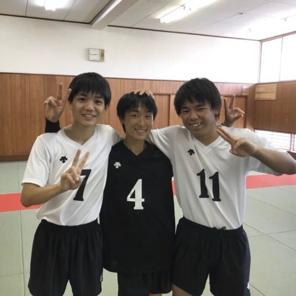
ひがさ しゅんた
日笠 峻汰
商学部
商学科
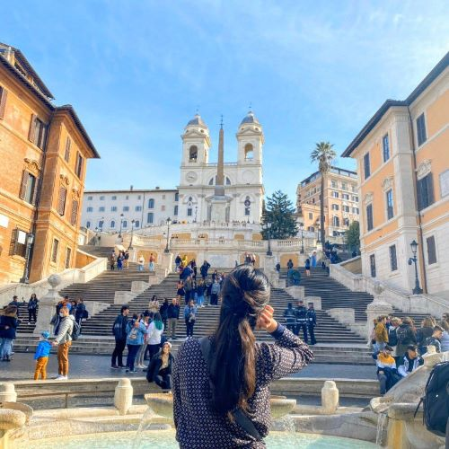
ひらた なお
平田 奈於
文学部
文学科
まえだ かいと
前田 海斗
経済学部
経済学科
みぞかみ すず
溝上 澄珠
文学部
文学科
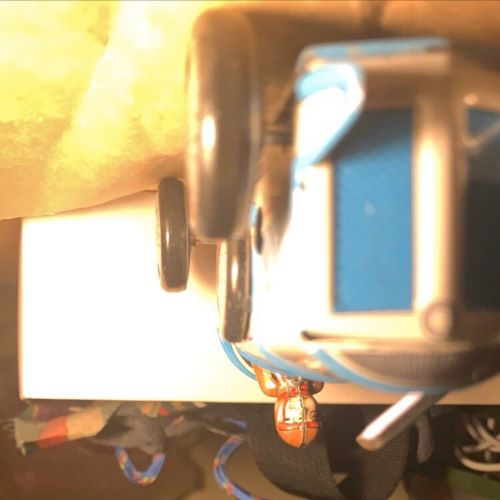
むろた けんたろう
室田 健太郎
生活科学学部
居住環境学科
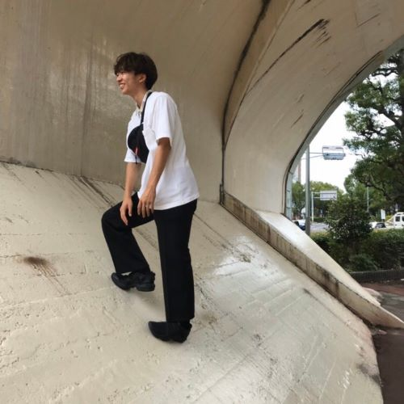
やまうち まさし
山内 優志
工学部
建築学科
よしおか だいき
吉岡 大輝
経済学部
経済学科
わだ みづき
和田 弥月
生活科学学部
食品栄養科学科